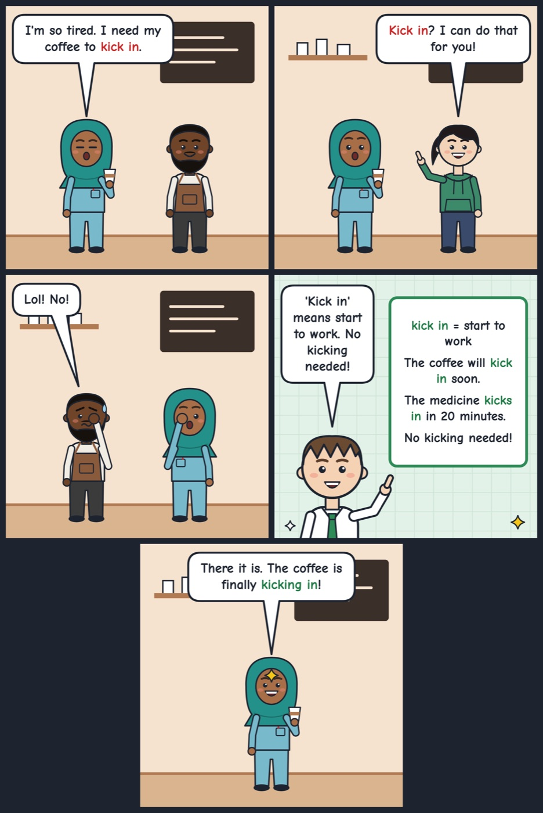

kick in
When something kicks in, it starts to work or take effect.
The painkiller takes about twenty minutes to kick in.
'Kick in' means to start having an effect. Use it for coffee, medicine, heating or a feeling.

Your turn
What takes a long time to kick in for you in the morning?
What takes a long time to kick in for you in the morning?